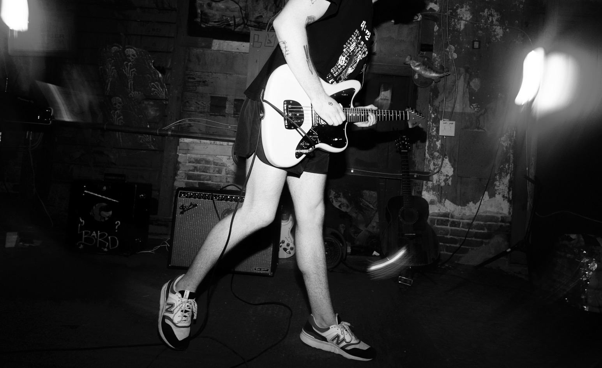

roflmaoist (main) - original experimental electronic music performed live
dj roflmaoist - aggressive dark techno dj sets of mostly non-original music (with some originals thrown in for good measure)
feel free to listen to my music or send me an email at walkeratlonline@gmail.com